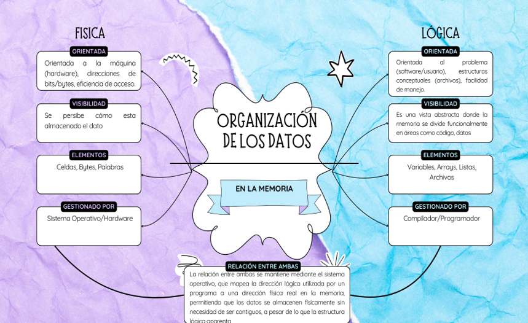
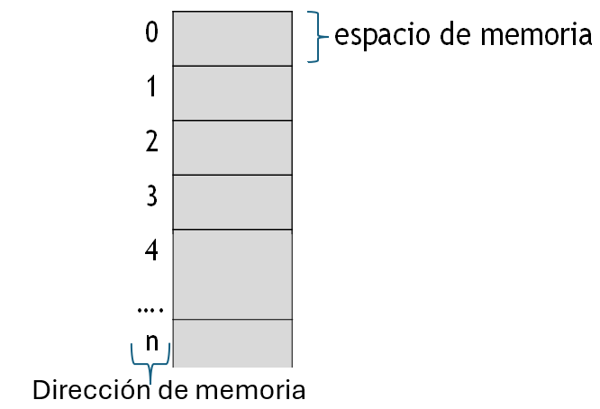
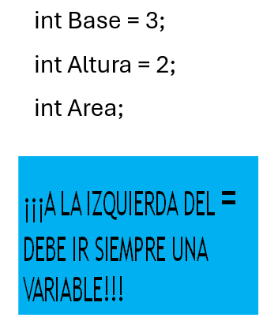
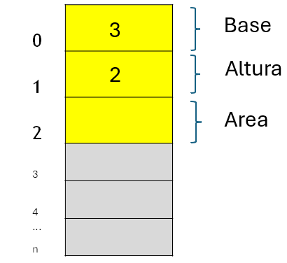
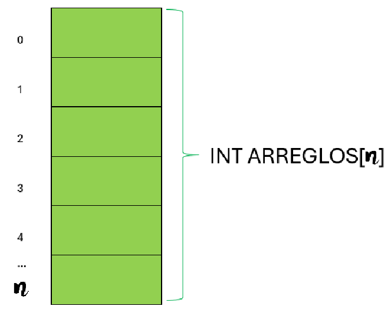
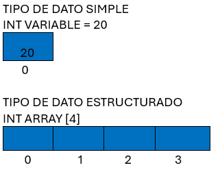
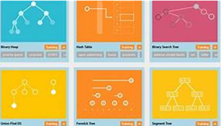
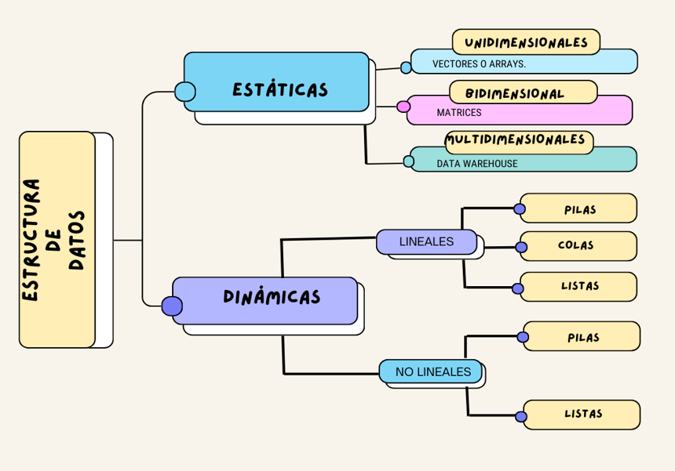

Emplea tipos y estructuras de datos en la memoria de una computadora a partir de su clasificación y propósito, así como un lenguaje de programación.
📚 Los siguientes temas se tratan en esta unidad:

Figura 2 - Medios de almacenamiento

Representación binaria: La memoria (RAM) está físicamente formada por bits, componentes que pueden estar en uno de dos estados claramente definidos, encendido/apagado (0's y 1's).
Como se observa un bit puede representar dos valores, combinando grupos de bits se pueden representar más estados.
La memoria física RAM está compuesta por casillas de memoria en las cuales se pueden almacenar datos que están organizados por direcciones de memoria. Cada celda en una dirección puede ser de 8, 16, 32 o 64 bits.

De acuerdo con la forma en que los datos se organizan, se clasifican en:
a) Un tipo de dato simple (primitivo) es aquel que hace referencia a un único valor a la vez y que ocupan solo una casilla de memoria, por tanto, una variable simple hace referencia a un único valor a la vez. En este grupo se encuentran:
La unidad de control se dirige a los distintos bytes de memoria por su posición.
Todos los lenguajes de programación permiten dar un nombre a las posiciones de memoria y se conocen como variables.
Entonces una variable son las posiciones de memorias asociadas a un nombre, por ejemplo: Area, Base y Altura.
Las variables pueden cambiar su contenido o pueden contener un valor constante, como es el caso del valor pi.
Usando un lenguaje de programación, se declaran las variables asignando un valor Base y Altura.

Automáticamente la unidad de control asigna a las casillas de memoria con sus direcciones a esas variables.

Al momento de declarar las variables de tipo de dato entero esas casillas nada más van a permitir datos enteros, en el caso del ejemplo al momento de declararlas se les ASIGNÓ un valor de tipo de dato entero a las variables Base=3 y Altura=2.
🎯 Propósito: Utilizar un lenguaje de programación para declarar las variables que son las posiciones de memoria y que tienen un nombre, para este caso, son Base, Altura y Area definiéndolas con el tipo de dato simple que son los enteros.
La intención de esta actividad es que comprendan como declarar variables con su respectivo tipo de dato para reservar un espacio de memoria y también como asignarle valores, además de entender la entrada y salida de datos.
Subir esta evidencia a classroom en la hora y fecha indicada.
⭐ El valor de la actividad es de 10 puntos.
b) Los tipos de datos compuestos o estructurados (estructura de datos) se caracterizan por el hecho de que, con un nombre, se hace referencia a un grupo de casillas. Es decir, que tiene varios componentes, que son de un tipo de dato simple. Por ejemplo:
Arreglos (arrays): colecciones ordenadas de elementos del mismo tipo.


🧑🎓Para poder continuar es importante comprender que es una estructura de datos
Las estructuras de datos son fundamentales para las principales actividades para llegar al desarrollo de grandes sistemas de software.
Las estructuras de datos permiten organizar, almacenar y manipular datos en la memoria de una computadora.

/Una estructura de datos nos va a permitir almacenar de forma organizada información en la memoria, para que posteriormente se pueda manipular eficientemente. Una estructura de datos está definida por tres elementos:
• Un conjunto de tipos de datos simples (enteros, float, doble, char, cadenas, etc.).
• La forma en que se encuentran relacionadas (ordenados a través de un subíndice, jerárquicos (apuntador) y en red (apuntador)).
• Las operaciones que se pueden realizar entre esas estructuras de datos (insertar, eliminar, consultar y actualizar).Clasificación de las estructuras de datos:

Las operaciones que se pueden hacer con estructuras de datos son varias. Las más básicas son: